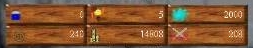

FLORA
Menath is a living world. You can go out in the wilderness, and you will find
different kind of flora in the different parts of the world. The Era Online world of
Menath is VERY unique. All parts of it are different. Right down to the trees which
inhabit the areas. If you to the northern part of the main continent, you will find no
plant life, only slow and giant trees. If you go abit further south to the east you will
find Heedi Trees, which are giant trees that lives in stacks, here you will also find
small grass looking plants, tulips and more. If you then go even further south you
will find trees with very long trunks. If you then go west you will find Light Trees
which are very small trees, about the size as a man. I can go on forever about
this cause there are very wide variety of trees and other flora in the world. There
are roses, tulips, Morninglows etc. to be found troughout the world. What can you
do with all these ? First off, you can chop logs of the trees by equipping a
lumberjack axe and then simply clicking on the tree trunk. About the plants and
other flora, some can be harvested by moving over them and picking them up.
Note that, not all plants can be harvested because their not fully grown. Just
move over the plant and try picking it up, if it says "Nothing here" then you cannot
pick it up.
What do plants do ? They can heal your health, stamina, mana and give you
other special powers and raise your attributes. Note that the plants which will
give you special powers and raise yout attributes are rare. So if you are in a
place where there are alot of Morninglows (raise your mana), you will have to
try to pick up alot of morning glows before finding one you can actually use.
FOOD
Food are vital for your characters survival ! You will not starve to death if
not eating, but you will not heal if your character does not posess any food.
Food can be found in the wilderness, on dead creatures and in stores. Merchants
and Provisioners often sell food and drink. When you want your character to
eat or drink (when your health or stamina is low), simply USE the food or/and
drink and your character will now that this food is edible now. Your character will
then eat/drink it when he/she feels like it. But he will not touch food or drink that
just lies in the backpack. You HAVE TO USE it first, and then you will see the
number in the food/drink slot in your character increasing. Food/drink just lying
in the backpack has no effect, you got to USE it first. Look at the picture bellow,
and you will see the slots you will see in your character sheet. When you for
example USE an apple, the number beside the food icon will go up 1 which and
your character knows that he/she can eat this now, so when he/she eat 1 food,
some health and stamina will be restored and 1 will be substracted. Same goes
for the drink slot beside the food slot. To say it short, USE a food or drink item,
and the number in your food/drink slot will go up depending on how much food or
drink the item gives you. An apple only raises food by 1 while roasted meat
will raise it by 5 ! Same goes for drink. The food/drink item lying directly in your
backpack HAS NO EFFECT, you must USE it first ! Then your character will
eat/drink it when he/she feels like it.

About meat and fish, you have to USE the meat/fish first, then click on a
camp fire. Your cooking skill will kick in, and the better skill you have, the faster
you will cook. When your done, you will have a roasted meat or roasted fish which
you can eat. Roasted meat and roasted fish gives more much more food than a
apple for example which makes the roasted meat/fish more valueable.